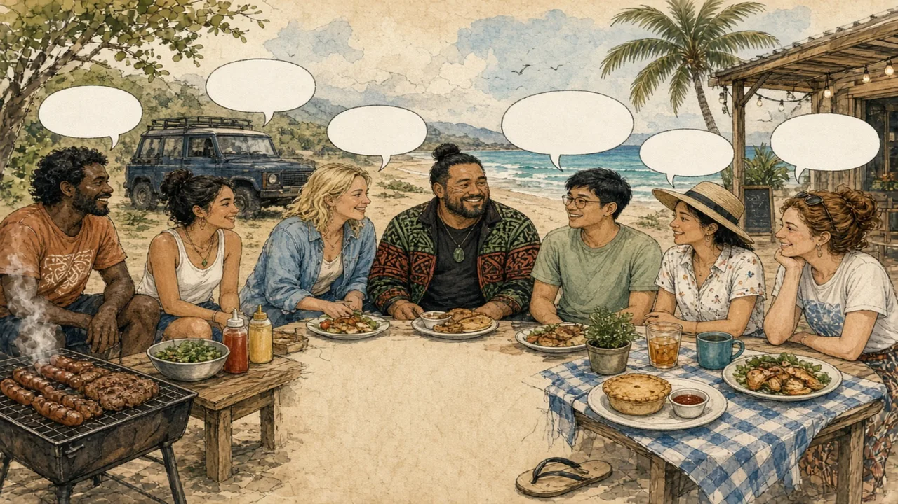

Down Under English has its own words, its own accent and its own habits — but not the ones in the tourist adverts.
Oceania · Language & slang · Lesson 2 of 7
🌍 World map · ← Around the World: Oceania · 🌱 Easier version (A2) · ← Deadly Animals and Cuddly Koalas: The Real Wildlife Story · More Than the Haka: Māori Culture Today →

Each new word is hidden in a sentence. Read it aloud and say what you think the bold word means from the rest of the sentence — then reveal it and see how close you were.
Read each part. After it, there's a quick comprehension check (try the questions from memory first), then one thing to discuss.
The image of the Australian saying “G'day mate” and “throw a shrimp on the barbie” comes largely from a 1984 tourism advertisement, in which actor Paul Hogan invited Americans to visit. Australians actually say “prawn”, not “shrimp”, and “G'day” is heard far less often than the cliché suggests. What really marks everyday speech is abbreviation and the habit of adding -ie or -o: “brekkie” (breakfast), “arvo” (afternoon), “servo” (service station), “avo” (avocado) and “barbie” (barbecue). Other words are local: a “ute” is a pick-up truck, “thongs” are flip-flops and “heaps” means a lot. “No worries” and “she'll be right” express an easy-going, practical attitude.
1. Where does the “shrimp on the barbie” image come from?
2. What do Australians say instead of “shrimp”?
1. From a 1984 tourism advertisement.
2. Prawn.
New Zealand English has a distinct accent, with vowels that sound different from Australian ones, and its own words. Flip-flops are “jandals”, a corner shop is a “dairy”, a swimming costume is “togs”, a cooler box is a “chilly bin” and a long walk in the countryside is “tramping”. Many everyday words come from te reo Māori: “kia ora” (hello, thanks), “kai” (food), “whānau” (extended family) and “mana” (prestige). Friends may say “sweet as” (great) or “chur” (thanks, cool). Politicians, newsreaders and shops now regularly use Māori words and place names, and most people take pride in pronouncing them properly.
1. What is a “dairy” in New Zealand?
2. Where do “kia ora” and “whānau” come from?
1. A corner shop.
2. From te reo Māori.
Humour and understatement are a large part of how people talk. “Not bad” can mean excellent, and “a bit of a problem” can mean a disaster. Friends tease each other, and being able to take a joke is seen as a sign of confidence. A person who appears to boast, on the other hand, may be gently teased in return. Aboriginal English, spoken by many Indigenous Australians, is a dialect with its own grammar and vocabulary, shaped by Aboriginal languages, and many Aboriginal words have entered general English, such as “kangaroo”, “boomerang” and “koala”. Visitors can pick up the rhythm quickly if they listen, ask when they are unsure and do not try too hard to copy the accent.
1. What does “not bad” often mean?
2. Which everyday English words come from Aboriginal languages?
1. Excellent, as an understatement.
2. For example kangaroo, boomerang and koala.
A stereotype and the reality rarely match. This lesson's grammar gives you the structure to describe the difference.
Complete each sentence about this topic.
1. Let's at the beach after work. (hang out / hang in)
2. Can you the kids at three o'clock? (pick up them / pick them up)
3. I'm looking to the long weekend. (forward / after)
1. hang out
2. pick them up
3. forward
1. We need to this problem before Friday. (sort out / sort in)
2. I can't the noise any more. (put up with / put with up)
3. She a great idea for the party. (came up with / came with up)
1. sort out
2. put up with
3. came up with
Hold on to this — you'll need it in the Speak tab.
Slang is a sign of belonging, and a famous phrase in a tourism advert is not the same as a living language. People in the region often notice with amusement that visitors expect to hear “G'day mate” in every sentence. A more useful approach is to learn the patterns, such as shortenings and understatement, rather than a list of exotic words. It also helps to remember that both countries are multilingual and multicultural, with Indigenous languages, Pacific languages and the languages of migrants all shaping the way people speak.
This is the heart of the lesson — do all of it out loud. The timer is there to keep you going: fill the time with detail rather than escaping it.
Explain how Australian and New Zealand English really sound, as if to a friend who expects to hear “G'day mate” in every sentence. Move through the arc: the famous phrases and the real ones → New Zealand and its own vocabulary → understatement, banter and respect.
Use today's grammar at least three times, and work in at least five key words (slang, abbreviation, accent, dialect, understatement, informal, loanword, banter).
“Visitors should adapt to local slang rather than keep their own way of speaking.” Discuss.
Tell a story from your own world — work, family, the news — that connects to this topic. Stuck for an idea? Pick one of these and run with it:
🌍 World map · ← Around the World: Oceania · 🌱 Easier version (A2) · ← Deadly Animals and Cuddly Koalas: The Real Wildlife Story · More Than the Haka: Māori Culture Today →